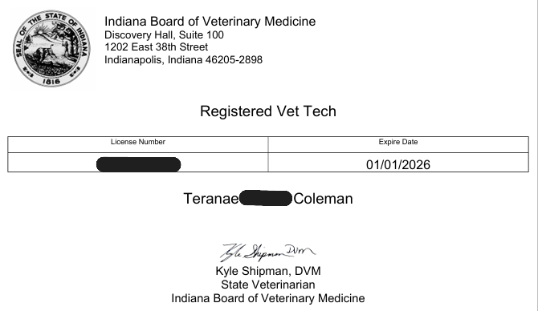
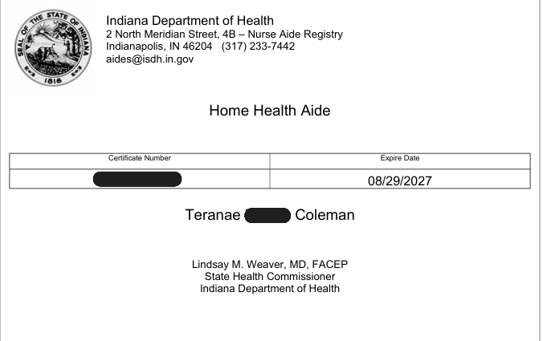
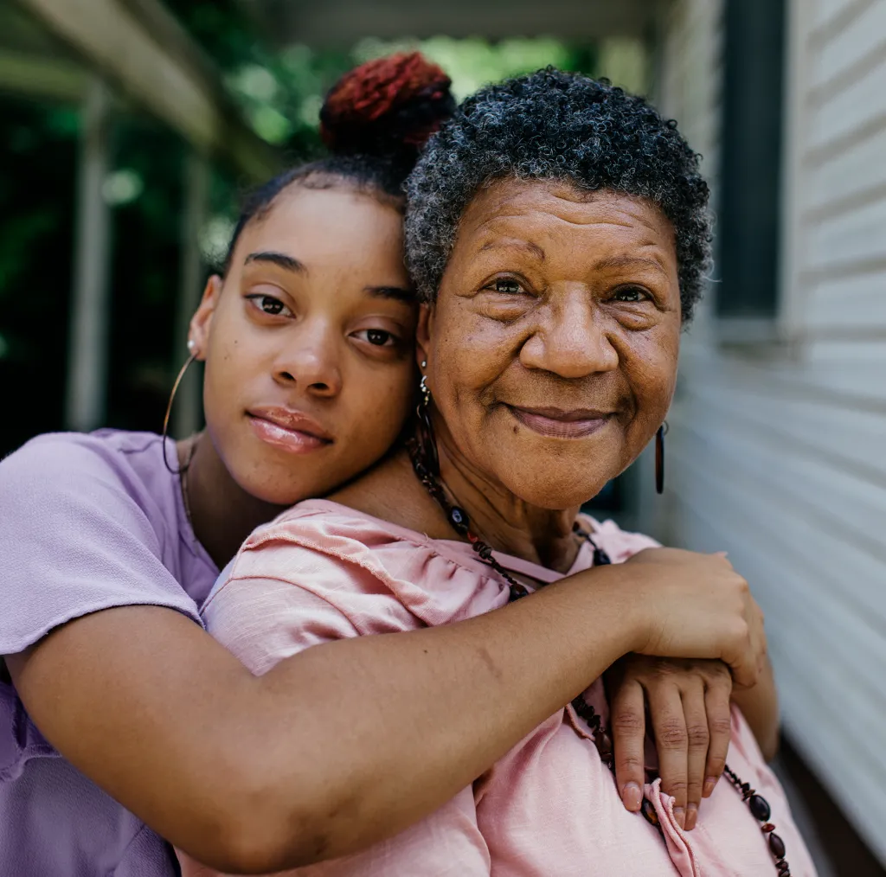

Licenses
Currently active licenses that I hold will continue to acheive more certifications and licenses near future !
Registered Vet Tech
A Registered Veterinary Technician (RVT) provides hands-on medical care to animals, assisting veterinarians with exams, diagnostics, and surgical procedures. They also perform lab tests, administer medications, and educate pet owners on proper animal care. RVTs play a vital role in ensuring the health and well-being of animals while supporting veterinary operations.

HHA
A Home Health Aide (HHA) provides compassionate, hands-on care to individuals who are elderly, ill, or disabled, assisting with daily activities such as bathing, dressing, and meal preparation. They monitor health conditions, report changes to medical professionals, and help clients maintain comfort and independence at home. HHAs play a vital role in supporting the well-being and quality of life of those in their care.
 